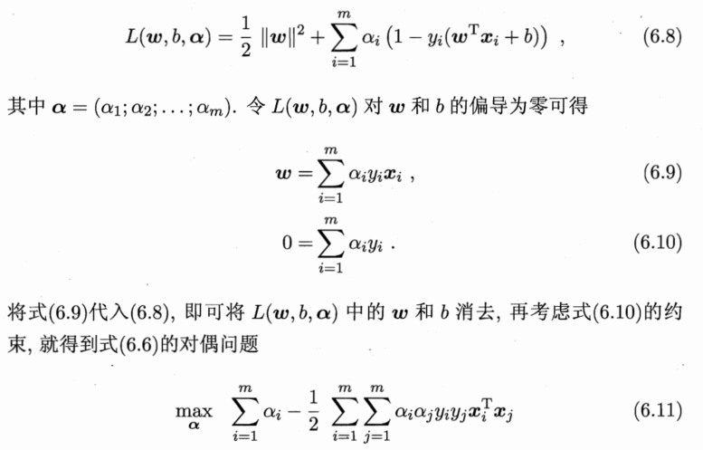

6.1 间隔与支持向量
考虑下列问题，如果能将训练样本分开的超平面有很多，如何选择最优超平面？
直观上看，应该寻找位于两类训练样本正中间的划分超平面，在样本空间中，划分超平面可用如下线性方程表示：
$$\vec{w}^T\vec{x}+b=0$$
其中\(\vec{w}=(w_1;w_2;…,w_d) \)为法向量,决定超平面的方向，b为位移项，决定超平面与原点的距离，\( \vec{x} \)到超平面\( (\vec{w},b) \)的距离可写为
$$r=\frac{\vec{w}^T\vec{x}+b}{||\vec{w}||}(无向距离)$$
令：
$$\begin{cases} \vec{w}^T\vec{x_i}+b \geq +1, & y_i=+1; \\ \vec{w}^T\vec{x_i}+b \leq -1, & y_i =-1. \end{cases} $$
距离超平面最近的这几个训练样本点使上式等号成立，被称之为支持向量(support vector),这两个异类支持向量到超平面的距离之和为：
$$\gamma=\frac{2}{||\vec{w}||}$$
它们被称之为间隔(margin)
想要找到最大间隔的划分超平面：
$${max}_{\vec{w},b} \ \frac{2}{||\vec{w}||} \\ \\ s.t. \ \ y_i(\vec{w}^T\vec{x_i}+b) \geq 1, \ \ i=1,2,…,m$$
等价于:
$${min}_{\vec{w},b} \ \frac{1}{2} {||\vec{w}||}^2 \tag {6.6}\\ \\ s.t. \ \ y_i(\vec{w}^T\vec{x_i}+b) \geq 1, \ \ i=1,2,…,m$$
这就是支持向量机(Support Vector Machine,简称SVM)的基本型
6.2 对偶问题
我们希望求解6.6式这个凸二次规划(convex quadratic programming)问题，使用拉格朗日乘子法可以得到其对偶问题(dual problem),为每条约束添加拉格朗日乘子\( \alpha_i \geq 0 \):

上式需满足KKT条件：
如何求解式6.11？可以用SMO(Sequential Minimal Optimization)算法，具体详见我写的关于SVM的理解我关于SVM的一点理解
6.3 核函数
前面的讨论中我们假定样本是线性可分的，然而在现实任务中可能并不存在一个能正确划分两类样本的超平面，对于这类问题，可将样本从原始空间映射到更高维的特征空间，使得在这个特征空间内线性可分
令\( \phi(\vec{x}) \)表示将 \( \vec{x} \) 映射后的特征向量，那么在特征空间中划分超平面所对应的模型可表示为：
$$f(\vec{x})=\vec{w}^T\phi(\vec{x})+b$$

其中涉及到计算 \(\phi(\vec{x_i})^T \phi(\vec{x_j}) \),由于特征空间的维数可能很高，直接计算\(\phi(\vec{x_i})^T \phi(\vec{x_j}) \)通常是困难的，为了避开这一困难，可以设想如果存在这样一个函数：
$$k(\vec{x_i},\vec{x_j})=<\phi(\vec{x_i}),\phi(\vec{x_j})>=\phi(\vec{x_i})^T \phi(\vec{x_j})$$
上式中我们将特征空间的内积转换成样本在原始空间中通过函数\(k() \)计算的结果，这样就避免了直接在高维空间中计算内积，而这样的函数\(k() \)被称之为核函数
但是合适的核函数一定存在吗？我们有下面的定理：
上述定理表明，只要对一个对称函数所对应的核矩阵半正定，它就能作为核函数使用。事实上，对于一个半正定核矩阵，总能找到一个与之对应的映射\( \phi \)。也就是说，任何一个核函数都隐式地定义了一个称为再生核希尔伯特空间(Reproducing Kernel Hilbert Space，简称RKHS)的特征空间
在不知道特征映射的形式时，我们并不知道什么样的核函数是合适的，而核函数也仅是隐式地定义了这个特征空间。若核函数选择不当，则意味着将样本映射到了一个不合适地特征空间，可能会导致性能不佳
此外，还可通过核函数地函数组合得到新的核函数
6.4 软间隔与正则化
前面的讨论我们总是假设训练样本在原空间或特征空间中是线性可分的，事实上我们总可以将其映射到更高维的空间使其在这个空间内线性可分，然而这会产生过拟合的风险
缓解这一问题的方法是允许支持向量机在一些样本上犯错误，为此，我们要引入软间隔(soft margin)的概念
软间隔是允许某些样本不满足约束
$$y_i(\vec{w}^T\vec{x_i}+b) \geq 1$$
引入松弛变量(slack variables) \( \xi_i \geq 0 \)
上述就是软间隔支持向量机，其中每一个样本都有一个对应的松弛变量，用来表征该样本不满足约束6.28的程度。但这仍是一个二次规划问题
于是对任意训练样本\((\vec{x_i},y_i) \),总有 \( \alpha_i=0 \) 或 \( y_if(\vec{x_i})=1-\xi_i \),若 \( \alpha_i=0 \)，则该样本不会对 \(f(\vec{x}) \)有任何影响；若\( \alpha_i >0 \),则必有\( y_if(\vec{x_i})=1-\xi_i \)，该样本为支持向量：若 \( \alpha_i < C,则 \mu_i >0,进而有 \xi_i=0 \),即该样本恰好在最大间隔边界上；若\(\alpha_i = C,则 \mu_i =0，此时若 \xi_i \leq 1\)则该样本落在最大间隔内部，若\(\xi_i >1\)则该样本被错误分类。由此可以看出，最终模型仅与支持向量有关，保证了稀疏性
支持向量机与对率回归的异同：
6.5 支持向量回归
现在我们来考虑回归问题，对样本\( (\vec{x},y) \),传统回归模型通常直接基于\(f(\vec{x}) \) 与真实输出 y 之间的差别来计算损失，而支持向量回归(Support Vector Regression,简称SVR)假设我们能容忍\( f(\vec{x}) \)与y之间最多有\( \epsilon \)的偏差，即仅当\( f(\vec{x}) \)与y之间的绝对值大于\( \epsilon \)时才计算损失
SVR问题可转化为：
注意上面那个6.43式，这个与SVM里面的意义有所不同，SVM是最大化间隔，而SVR是最小化距离损失,\( \frac{1}{2} ||\vec{w}||^2 \)应该看作是正则化项，而不是先前SVM里的间隔.然后接下来求解与SVM是一致的，这里就不赘述了
6.6 核方法
无论是SVM还是SVR，学得的模型总能表示成核函数\( k(\vec{x},\vec{x_i}) \) 的线性组合，事实上我们有下面这个称为表示定理(representer theorem)的一般结论：
这意味着对于一般地损失函数和正则化项，优化问题的最优解都可以表示成核函数的线性组合，这显示出核函数的巨大威力
人们发展出一系列基于核函数的学习方法，统称为核方法(kernel methods),例如我们可以通过核化将线性分类器拓展为非线性学习器，从而得到核线性判别分析(Kernelized Linear Discriminant Analysis,简称KLDA)